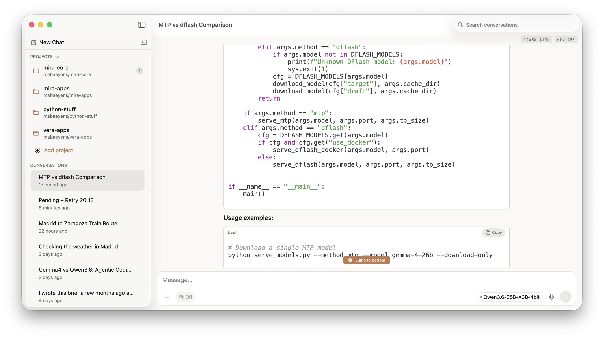
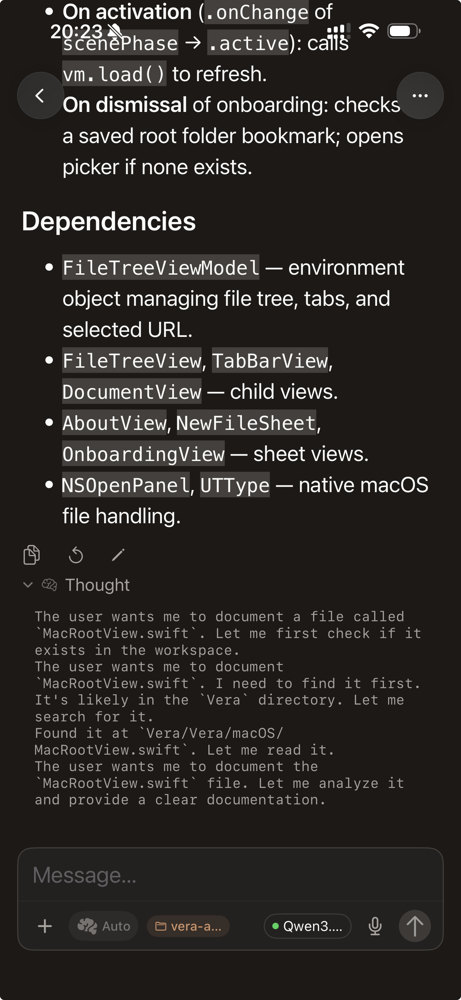

Local AI · macOS · iOS · iPadOS
AI that
stays home.
Mira runs entirely on your Mac, iPhone, and iPad — powered by Apple Silicon, no API keys, no subscriptions. Your conversations stay on your devices.
Native on every device


What you can do
Chat with your codebase
Open a project folder and ask questions about structure, logic, or specific files.
Summarize any document
Drop a PDF, article, or note — Mira reads it locally, nothing leaves the device.
Switch models on the fly
Move between Llama, Qwen, Gemma, and others without restarting the app.
Search the web with context
Opt-in grounded answers when you need current information.
Pick up on your iPhone
Conversations sync to your iPhone via iCloud — start on Mac, continue on the go.
Run without internet
Full inference offline, zero API keys, no metered costs.
How it works
Local inference
Powered by Apple Silicon's Neural Engine via mlx-lm. Run Llama, Gemma, Qwen, and other open models — fully offline, zero API keys, no metered costs.
No cloud
Your conversations stay on your Apple devices. Sync between Mac and iPhone uses your personal iCloud — no Mira servers, no third-party data handling, ever.
macOS + iOS + iPadOS
Native SwiftUI apps sharing one backend. The Mac runs the model; your iPhone and iPad connect over your home network for a seamless multi-screen experience.
Open source
The inference backend (mira-core) is MIT licensed — inspect it, modify it, self-host it. Full transparency into what runs on your machine.
mira-core on GitHubMira
AI that stays home.
Built by Miguel A. Baeyens, with Claude Code · askmira.es